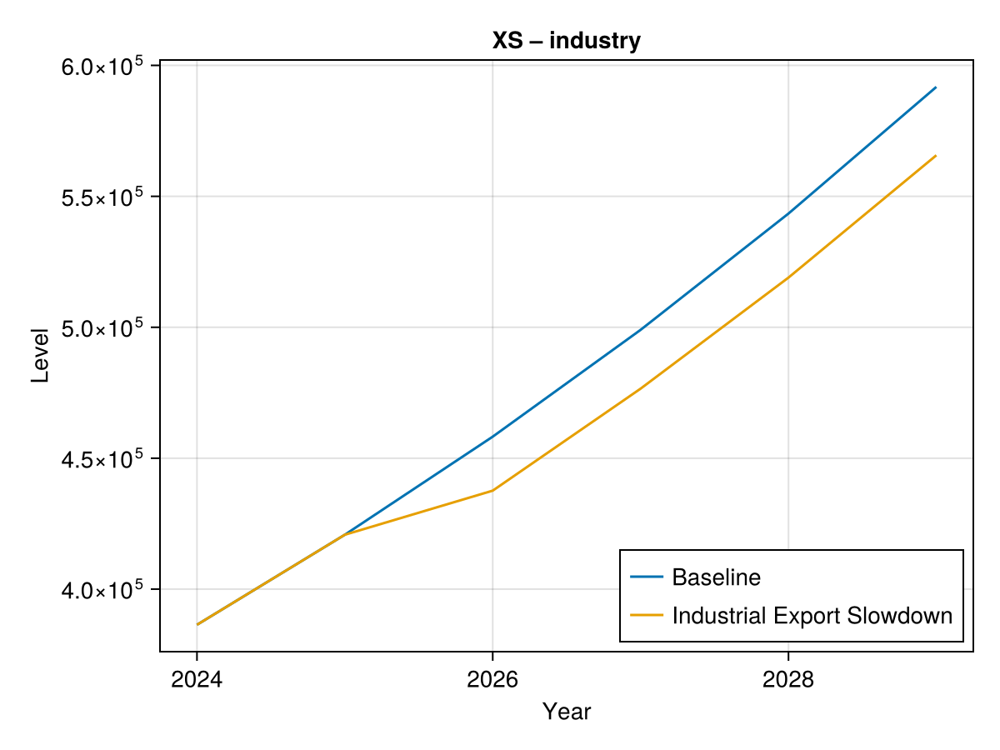
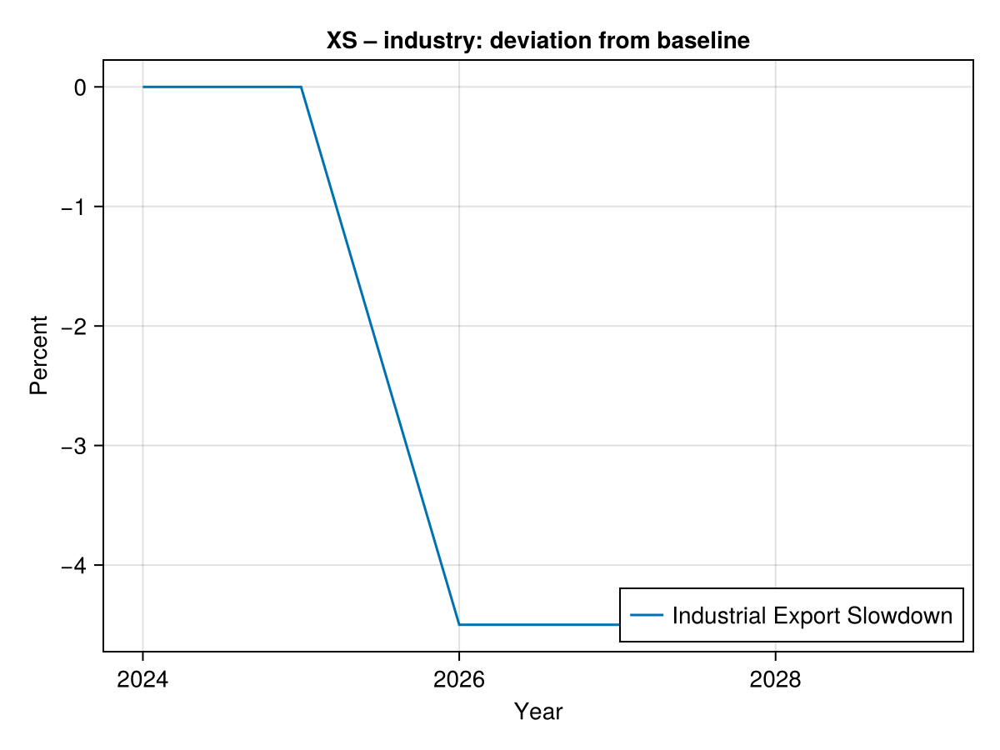
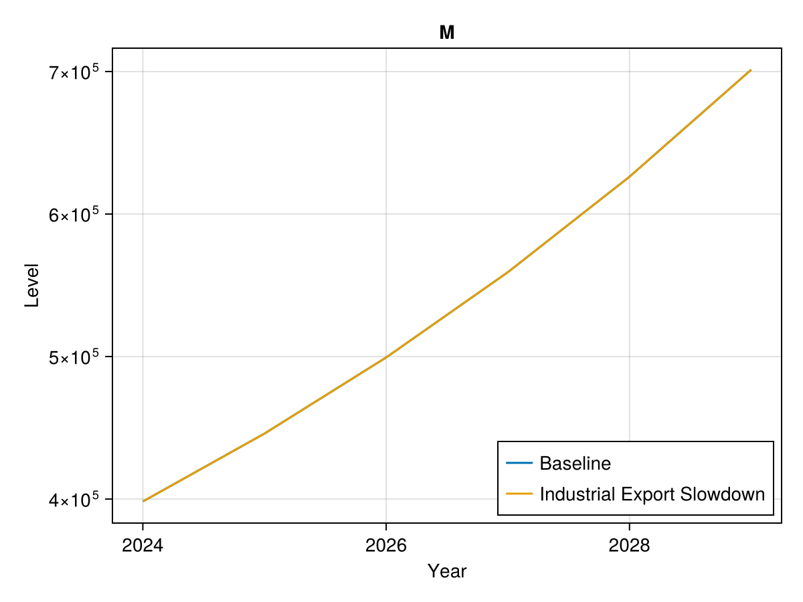
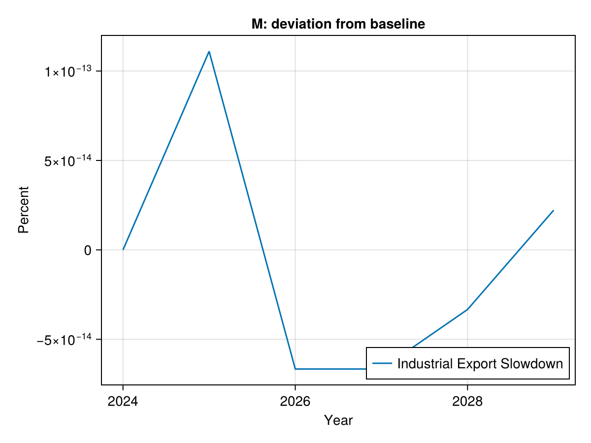

Vietnam Merged Model — Scenario Report
Scenarios
Industrial Export Slowdown
(export_growth = Dict(:industry => Dict(2029 => 0.09, 2026 => 0.04)),)
XS – industry


X


M


(export_growth = Dict(:industry => Dict(2029 => 0.09, 2026 => 0.04)),)



